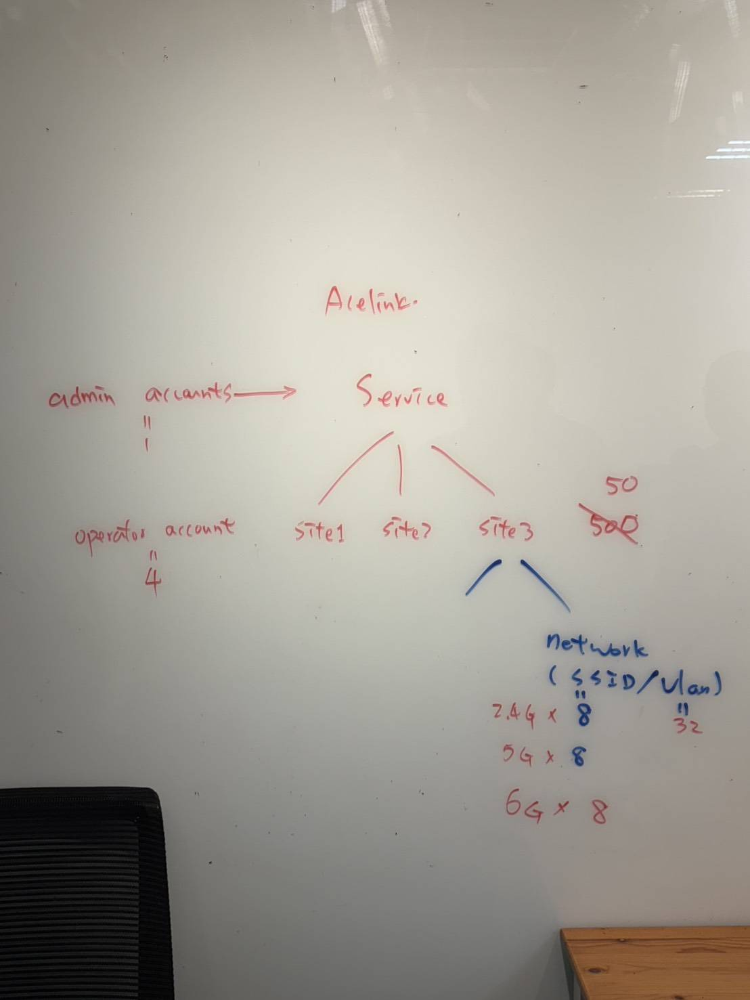
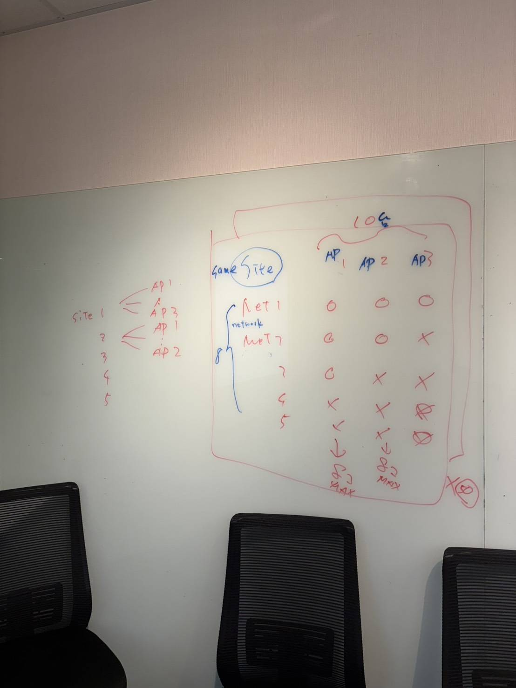

| Neton | v0.3.08.f0304d0718 | Install APP |
|---|
|
Release_Note:
1. JIRA fixed : EW7689FBE-2 EW7689FBE-3 EW7689FBE-7 EW7689FBE-8 EW7689FBE-9 EW7689FBE-10 EW7689FBE-11 EW7689FBE-12 2. Customer consent (0715~0716) : EW7689FBE-17 EW7689FBE-20 new item : disable auto channel 2.4G : 1-13 5G--BAND1,2,3 var CHANNEL_OPTION_JP_5G_BAND1 = [ 36,40,44,48 ]; var CHANNEL_OPTION_JP_5G_BAND2 = [ 52,56,60,64 ]; var CHANNEL_OPTION_JP_5G_BAND3 = [ 100,104,108,112,116,120,124,128,132,136,140,144 ]; var CHANNEL_OPTION_JP_6G = [ 1,2,5,9,13,17,21,25,29,33,37,41,45,49,53,57,61,65,69,73,77,81,85,89,93 ]; limit :   3. fw v0.3.04 : EW7689FBE-14 EW7689FBE-15 EW7689FBE-18 4.fw version ? EW7689FBE-1 EW7689FBE-4 EW7689FBE-5 EW7689FBE-6 EW7689FBE-13 EW7689FBE-16 EW7689FBE-19 |
| Installation Notes Please click "Install APP" to install After the installation is complete, you must go to Mobile Settings -> General -> Device Management-> "Edimax Technology Co., LTD." -> click Trust |